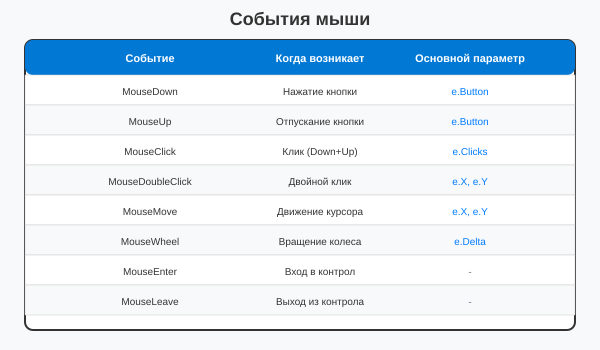
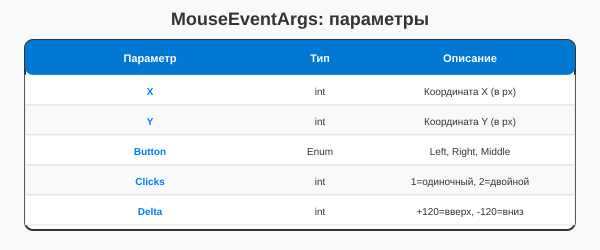
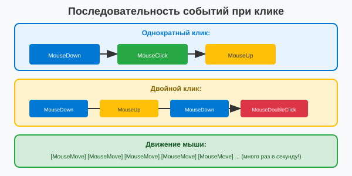

Урок 4.1: События мыши
📌 Ключевые моменты этого урока:
- 9 событий мыши: MouseDown, MouseUp, MouseClick, MouseDoubleClick, MouseMove, MouseWheel, MouseEnter, MouseLeave, MouseHover
- MouseEventArgs содержит: X, Y (координаты), Button (какая кнопка), Clicks (одиночный/двойной), Delta (колесико)
- Последовательность событий: MouseDown → MouseClick → MouseUp (при однократном клике)
- Каждая кнопка мыши (Left, Right, Middle) обрабатывается отдельно через e.Button
- Delta для колеса: положительный = вверх, отрицательный = вниз (Delta / 120 = количество кликов колеса)
Полный обзор событий мыши
Windows Forms предоставляет 9 событий мыши для полного контроля взаимодействия:

Полный обзор событий мыши
MouseEventArgs: полная таблица параметров
private void Form1_MouseDown(object sender, MouseEventArgs e)
{
if (e.Button == MouseButtons.Left)
{
// Левая кнопка мыши нажата
MessageBox.Show($"Нажата левая кнопка в точке ({e.X}, {e.Y})");
}
}
private void Form1_MouseUp(object sender, MouseEventArgs e)
{
// Кнопка мыши отпущена
}
private void Form1_MouseMove(object sender, MouseEventArgs e)
{
// Курсор перемещается
this.Text = $"Мышь: ({e.X}, {e.Y})";
}
Таблица параметров MouseEventArgs
Обработка разных кнопок мыши
private void Form1_MouseClick(object sender, MouseEventArgs e)
{
switch (e.Button)
{
case MouseButtons.Left:
MessageBox.Show("Левая кнопка");
// Обычное действие
break;
case MouseButtons.Right:
MessageBox.Show("Правая кнопка");
// Контекстное меню или альтернативное действие
break;
case MouseButtons.Middle:
MessageBox.Show("Средняя кнопка");
// Редко используется
break;
}
// Проверка двойного клика
if (e.Clicks == 2)
{
MessageBox.Show("ДВОЙНОЙ клик!");
}
}Колесо мыши (MouseWheel)
private int zoomLevel = 100; // 100% масштаб
private void Form1_MouseWheel(object sender, MouseEventArgs e)
{
// e.Delta = +120 для одного клика вверх, -120 для вниз
int wheelClicks = e.Delta / 120;
zoomLevel += wheelClicks * 10; // Увеличиваем/уменьшаем на 10% за клик
zoomLevel = Math.Max(10, Math.Min(zoomLevel, 300)); // Границы 10%-300%
this.Title = $"Zoom: {zoomLevel}%";
this.Invalidate(); // Перерисовка с новым масштабом
}MouseDown, MouseUp, MouseMove
Последовательность событий при клике

Последовательность событий мыши
Отслеживание позиции курсора
private Point mousePosition;
private void Form1_MouseMove(object sender, MouseEventArgs e)
{
mousePosition = new Point(e.X, e.Y);
this.Invalidate(); // Перерисовка для отображения курсора
}
private void Form1_Paint(object sender, PaintEventArgs e)
{
Graphics g = e.Graphics;
// Рисуем что-то в позиции курсора
g.FillEllipse(Brushes.Red, mousePosition.X - 10, mousePosition.Y - 10, 20, 20);
}Практика: рисование мышью
private bool isDrawing = false;
private List<Point> points = new List<Point>();
private void Form1_MouseDown(object sender, MouseEventArgs e)
{
if (e.Button == MouseButtons.Left)
{
isDrawing = true;
points.Clear();
points.Add(new Point(e.X, e.Y));
}
}
private void Form1_MouseMove(object sender, MouseEventArgs e)
{
if (isDrawing)
{
points.Add(new Point(e.X, e.Y));
this.Invalidate();
}
}
private void Form1_MouseUp(object sender, MouseEventArgs e)
{
isDrawing = false;
}
private void Form1_Paint(object sender, PaintEventArgs e)
{
if (points.Count > 1)
{
e.Graphics.DrawLines(Pens.Black, points.ToArray());
}
}📝 Пример задания — слежение за курсором (Task16)
Синий круг диаметром 50px следует за курсором мыши через обработчик MouseMove:
using System.Drawing;
using System.Windows.Forms;
namespace CSharpGraphicsApp
{
public class Task16_MouseInteraction : Form
{
private Point figurePos = new Point(100, 100);
public Task16_MouseInteraction()
{
Text = "Задание 16 — Обработка мыши";
Size = new Size(600, 400);
BackColor = Color.White;
DoubleBuffered = true;
Paint += Form1_Paint;
MouseMove += Form1_MouseMove;
}
private void Form1_MouseMove(object sender, MouseEventArgs e)
{
figurePos = e.Location;
Invalidate();
}
private void Form1_Paint(object sender, PaintEventArgs e)
{
e.Graphics.SmoothingMode =
System.Drawing.Drawing2D.SmoothingMode.AntiAlias;
e.Graphics.FillEllipse(Brushes.Blue,
figurePos.X - 25, figurePos.Y - 25, 50, 50);
e.Graphics.DrawString("Перемещайте мышь",
SystemFonts.DefaultFont, Brushes.Black, 10, 10);
}
}
}Практическое задание
Задание: Рисование мышью
- Создайте простой графический редактор
- Реализуйте рисование линий мышью
- Добавьте возможность выбора цвета и толщины линии
- Реализуйте очистку холста
Задание по аналогии: Фигура следует за курсором (Task16)
По аналогии с Task16_MouseInteraction создайте форму, в которой фигура следует за курсором мыши.
- Создайте форму с
DoubleBuffered = trueи полемprivate Point figurePos. - Подпишитесь на событие
MouseMove. В обработчике сохраняйтеe.Locationв поле и вызывайтеInvalidate(). - В обработчике
PaintвключитеSmoothingMode.AntiAliasи нарисуйте фигуру (эллипс, прямоугольник или звезду) с центром вfigurePos. - Добавьте подсказку "Перемещайте мышь" в верхнем левом углу.
- Дополнительно: измените форму фигуры при нажатии левой кнопки мыши (обработайте
MouseDownиMouseUp).
💡 Совет: Рисуйте фигуру со смещением
-radius, чтобы центр фигуры совпадал с курсором, а не левый верхний угол.
Проверка знаний
Ответьте на вопросы, чтобы проверить, насколько хорошо вы усвоили материал:
1. Какое событие возникает при нажатии кнопки мыши?
2. Как получить координаты курсора мыши в событии MouseMove?
3. Какое событие срабатывает при нажатии кнопки мыши?